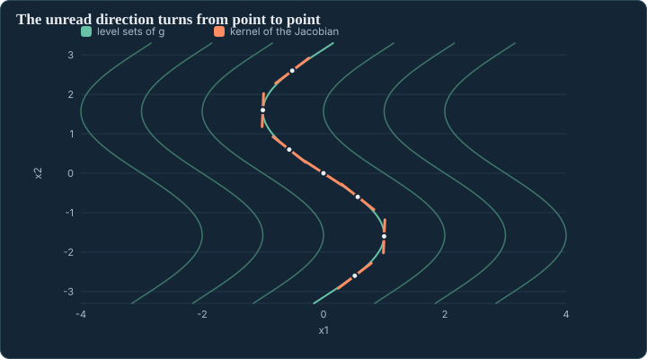
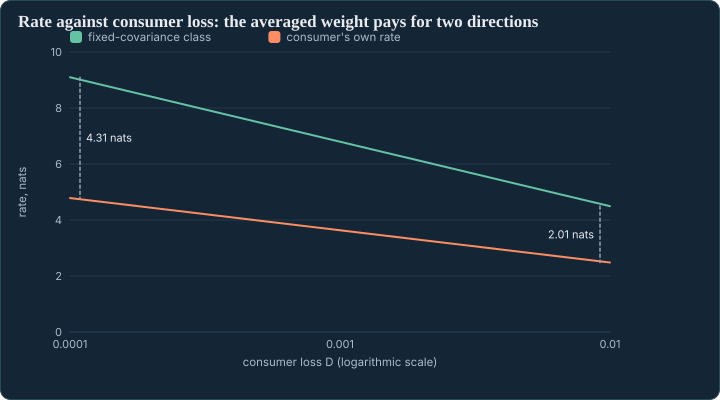

Chapter 17 — Open Problems and the Keystone Theorem
A framework is honest about its frontier when it can say not only what it has shown but what it has not yet shown, and which of the unshown things it is chasing versus which it has deliberately named and set aside. This chapter is that accounting. It has one recommended keystone — a theorem the program should prove next — and a short list of genuine open problems, each stated with its current status so no reader mistakes an aspiration for a result.
The keystone: learn-then-serve (T1)
The single theorem worth proving next is the one that would bridge the two shadows that are still only connected empirically: COST and VALUE. Call it T1, learn-then-serve.
The empirical situation is this. The COST theory (Chapter 7) prices serving a known read metric $P_C$. The blind probe (Chapter 10) recovers $P_C$ from finitely many queries. The flip (Chapter 8) shows that serving the recovered $P_C$ beats reconstruction. What is missing is a theorem that composes the sample complexity of recovering $P_C$ with the mismatch bounds of serving an imperfect $\hat P_C$ — a single guarantee of the form:
Given $N$ blind queries, the probe recovers $\hat P_C$ to accuracy $\varepsilon(N)$, and serving $\hat P_C$ instead of $P_C$ costs at most the mismatch tax $(r/2)\log(\cdot)$ plus a term in $\varepsilon(N)$ — so that with $N \gtrsim > (\text{something explicit})$ queries, the learned-then-served code is within a stated factor of the oracle code, end to end.
This is the COST↔VALUE bridge, and it is the recommended keystone because it converts
the program’s central practical claim — recover the observer, then serve it — from a
two-step empirical recipe into one theorem with an end-to-end guarantee. The pieces
exist: the probe’s recovery rate is measured (GO-1, and the rate-dependence of the
surrogate gap in GO-6, disputed: VI-32, VI-34, re-run owed), and the mismatch tax and omission floor are derived
([predicted]-grade, the floor measured [demonstrated]; Chapter 7, Appendix B, B6). T1 would fuse them. It carries no result yet — it is a stated target,
not a theorem — and I flag it as such [status: open, recommended].
Update, November 2026: the T1 note. A working note (paper/t1-learn-then-serve,
version 4.1, [exploratory]) proves T1 in two regimes. The consumer’s loss is
$\|g(\hat x)-g(x)\|^2$ for its weighted map $g=G^{1/2}\mathcal C$, and $Q$ is its read metric
averaged over a probe distribution. Read metrics at $m$ probe points give $\hat Q$ with
$(1-\varepsilon_-)Q\preceq\hat Q\preceq(1+\varepsilon_+)Q$ with probability $1-\delta$, where
$\varepsilon_\pm=\sqrt{2\nu_+\nu_-L/m}+2\nu_\pm L/(3m)$, $L=\ln(2p/\delta)$, and $\nu_\pm$ bound the
read metric relative to $Q$ (a one-sided matrix Bernstein bound; the lower constant needs no
prior knowledge, since read metrics are positive semidefinite). Any smooth consumer. For a
Gaussian vector source (RLD I) and a consumer whose $g$ has three bounded derivatives, the
Gaussian test channels that attain the series’ frontiers have consumer loss
$\operatorname{tr}(Q\Delta)$ up to an explicit remainder of order $(\operatorname{tr}\Delta)^2$, and
codes built for the consumer achieve the test channel’s rate, leakage and consumer loss
together. So a learner that knows derivative bounds, the source law and an upper constant
for the read metric certifies that the frontier for $\hat Q$, at a slightly smaller budget,
is achievable at consumer loss $D$, within $\tau_\varepsilon+O(D)$ bits per symbol of the
frontier for the true weight, $\tau_\varepsilon=\tfrac p2\log\frac{1+\varepsilon_+}{1-\varepsilon_-}$.
Consumers under a quadratic sandwich. If the loss lies between $1-\nu_-$ and $1+\nu_+$
times $(\hat x-x)^{\mathsf T}Q(\hat x-x)$, with the constants known in advance (no finite set
of probes can certify them), a converse holds as well, in every setting of the series, and
the series’ own codes for $\hat Q$ lie within $\tau_\nu+\tau_\varepsilon$ bits per symbol of the
outer bound in rate and in leakage at once, $\tau_\nu=\tfrac p2\log\frac{1+\nu_+}{1-\nu_-}$; the
learning part is sharp for an encoder that knows the weight only through the confidence
statement. The sandwich is restrictive: for a Gaussian source it makes $g$ bi-Lipschitz,
and $\tau_\nu$ is small only near linearity (a leaky ReLU of slope $a$ has
$\tau_\nu=p\log_2(1/a)$ bits per symbol, an upper bound on what is paid). Costs. Probing
costs $2pm$ consumer queries by central differences, whose error of order $h^2$ adds to
$\varepsilon_\pm$; a decoder that does not probe can be sent $\hat Q$ once in
$O(p^2\log(p\kappa/\varepsilon_q))$ bits that carry no information about the source. Three
fresh-context audits (ledger VI-22 to VI-24) found no false mathematical step; their
findings (errors in remarks and wording, gaps, overstatements) were all applied, and, by the
author’s own statement of 2026-11-18, the author has read all its proofs. Read operators of lower rank with a
kernel that does not move are covered in RLD I–III. Still open, and still the heart of the
original statement: one code, chosen from $\hat Q$ alone, that serves every consumer of a
class; codes in the process settings of RLD II–IV; a converse without the sandwich; a kernel
that moves with the point and a range estimated with error (principal angles, the commission
tax, and the omission floor, so far for the rate alone); and consumers that read across
dependent symbols. The end-to-end worked result the note calls for — recover a real
consumer’s operator, charge the probing, build the description, and bound its downstream
loss against the series’ frontier — is drafted for registration and not sealed.
A kernel that moves with the point (ledger row T1-MK, [exploratory]). One item of
that list has a first answer. An addendum to the note (paper/t1-moving-kernel, version
0.7) treats a consumer whose ignored directions change from one source point to the next.
Its level sets are the fibers the consumer cannot tell apart, $\ker J_g(x)$ is the tangent
space of the fiber through $x$, and the averaged weight $Q=\mathbb{E}\,J_g^{\mathsf T}J_g$
can then have rank $q$ larger than the output dimension $k$. The codes T1 serves are built
on Gaussian test channels whose error covariance $\Delta$ does not depend on the source
point. For that class, with a source $N(0,\Sigma)$ and a map $g$ with three bounded
derivatives, the least rate at consumer loss $D$ is, in nats,
$$ R_{\mathrm{fix}}(D)=\frac q2\log\frac qD+\frac12\log{\det}^{+}\bigl(\Sigma^{1/2}Q\Sigma^{1/2}\bigr)+O(D)\qquad(D\to0), $$
where ${\det}^{+}$ is the product of the nonzero eigenvalues. When $g$ has a measurable right inverse on a closed convex image in $\mathbb{R}^k$ and its output $g(T)$ has a density, finite differential entropy and a positive definite covariance, the consumer’s own rate–distortion function is that of its output, and so
$$ R_{\mathrm{fix}}(D)-R_{\mathcal C}(D)=\frac{q-k}2\log\frac1D+O(1)\qquad(D\to0). $$
A code chosen from the averaged weight alone, within this class, pays for $q$ directions where the consumer reads $k$, and the excess grows without bound as the loss falls. For the example $g(x_1,x_2)=x_1+a\sin x_2$ with $\Sigma=I$, $Q$ has rank $2$ and the output has dimension $1$, the consumer loss has a closed form, the excess is $\tfrac12\log(1/D)+C_*+O(D)$ with an explicit constant, and at $a=1$ and $D\le10^{-2}$ the least rate is the value of a one-dimensional concave problem. What the row does not say matters as much. These are statements about fixed-covariance test channels and about information rates, not about every code, and no lower bound for every code built from a weight is claimed. Three bounded derivatives exclude consumers such as $\|x\|^2$. For a general consumer the lower bounds hold below a loss $D_0$ for which there is no explicit bound. The result with a right inverse assumes the decoder holds one, and how a learner obtains one from queries, at what cost, is not treated. The idea that an encoder that knows the function should compute it and encode the result is in Misra, Goyal and Varshney’s functional quantization, and the high-resolution theory of Linder, Zamir and Zeger covers locally quadratic losses whose sensitivity matrix is positive definite, a hypothesis that a consumer with $k<p$ fails at every point. The numerical checks (two nets, 22 and 6 checks) had their criteria fixed in the scripts and were not sealed, and six fresh-context audits (ledger VI-52 to VI-57) found no mathematical error in a numbered statement. One of them, VI-55, passed over an unsupported expansion in the prose of the example, which has since been replaced by a proved proposition.

Figure 17.1. A read kernel that moves with the point, for the consumer g(x1, x2) = x1 + sin x2. The curves are level sets of g, the fibers the consumer cannot tell apart. The short strokes are the kernel of the Jacobian, the direction along the fiber, at points of the fiber through the origin. The direction turns with x2, so no single direction is unread everywhere, and the averaged read metric has rank 2 although the consumer reads one number.

Figure 17.2. The price of stopping at the averaged weight, for g(x1, x2) = x1 + sin x2 with a standard Gaussian source. The upper line is the least rate of a description whose error covariance does not depend on the point, ln(2/D) + ½ ln det Q. The lower line is the Shannon lower bound on the consumer’s own rate, which the note shows is tight to within ½ ln(1 + D). Both are drawn without their O(D) terms. The lines separate by ½ ln(1/D) − 0.291 nats, which grows without bound as the loss D falls (ledger row T1-MK, exploratory).
The cross-domain magnitude constant
The sharpest quantitative gap is inherited from the 20-Newsgroups blind test (041, Chapter 10). The blind non-oracle probe recovers the winning code’s direction prospectively — it chooses the better code before any label — and across rates the predicted magnitude tracks the measured downstream gap almost perfectly (Pearson 0.995, both decreasing per the finite-rate criterion). But the cross-domain scale constant — the single number that would turn “the flip is larger here than there” into a calibrated point prediction transferable from one domain to the next — did not transfer: the point magnitude overshot its sealed band on 041 [refuted, as a point prediction; the direction and the within-domain rate-scaling hold]. Finding the invariant that fixes this constant across domains is a concrete open problem with a clean falsification test already built (the sealed-magnitude protocol of 041). It is the difference between a theory that says which code wins and one that says by how much, portably.
The Green-rank positivity conjecture
From the LEGIBILITY leg (Chapter 9) comes a clean mathematical conjecture. The Green-kernel rank-limit theorem reduces Angular Preservation, for intrinsic dimension $d \le 3$, to the positivity of a single geometric coefficient — the leading Green-kernel rank coefficient — and proves rank 1 on the two-point homogeneous spaces $S^2, S^3, \mathbb{RP}^2, \mathbb{RP}^3$ (proved in Paper I; not yet a ledger row). The conjecture is that this coefficient is positive on a broad class of manifolds beyond the two-point homogeneous ones, which would extend Angular Preservation’s rank form from the exactly-solvable symmetric cases to the general $d \le 3$ setting [status: conjectured]. It is a self-contained problem in spectral geometry, and unlike T1 it does not need any new empirical apparatus — only a proof.
Named, not chased
Two directions are deliberately named and set aside — real, but not on the critical path, and stated here so that their absence from the program’s active work is a choice rather than an oversight.
The channel dual. The COST theory prices the observer; a dual theory would price the channel symmetrically, treating the compression channel and the observer as two sides of one variational problem. The structure is visible (the two-observer max-det program hints at it) but the program has not developed it, and it is named-not-chased [status: named].
The common-observation problem. Given a population of observers, is there a single representation that serves all of them near-optimally, and what is the price of the compromise? The two-observer rate region (Chapter 7) is the $k = 2$ corner; the general common-observation problem — the representation-design analogue of a public good — is named and deferred [status: named]. The regime map’s empty cell (concentrated / low-correlation, Chapter 12) is a small instance of the same question and is flagged for a synthetic fill or a structural-emptiness argument.
The discipline’s own frontier
The last open problem is methodological and was stated in Chapter 15: there is no mature standard toolkit for verifying AI-assisted work independently of the assistant that produced it. The program’s composition — fresh-context adversarial verification, differential testing against a second implementation, and a proof assistant for the flagship theorem — is a reasonable approximation, and VI-4 is the standing evidence it works and was needed. But it is not a recognized methodology, and building one is a real open problem that this program can only gesture at from inside. The adopt-now upgrades are concrete (mirror sealed preregs to OSF for a third-party timestamp; rewrite the C3 nets as property-based tests); the general solution is open [status: open, frontier].
What is settled enough to build on
To end the chapter honestly the other way: the read metric as the operative object, the three shadows as one object, the flip as a property of observation wherever the read operator is identifiable, the blind probe as a working recovery instrument, and the registration discipline as a functioning method — these are settled enough to build further work on, in the precise sense that they carry ledger rows at their class bars. The open problems above are the edges of a solid interior, not cracks in it. Chapter 18 states what that interior reduces to.